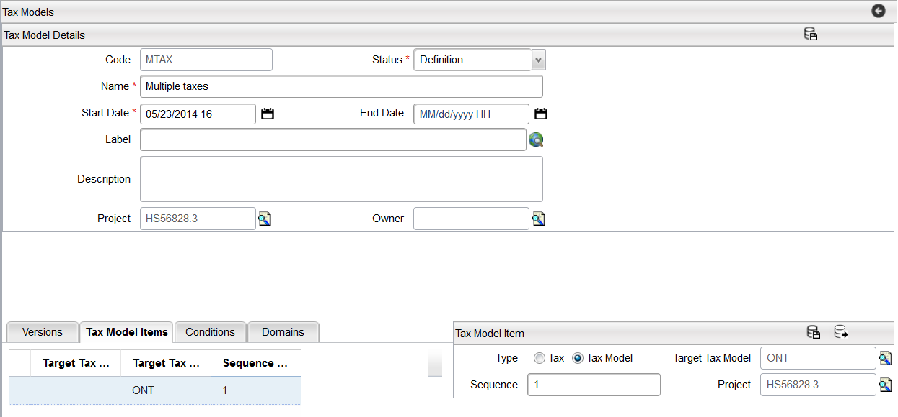
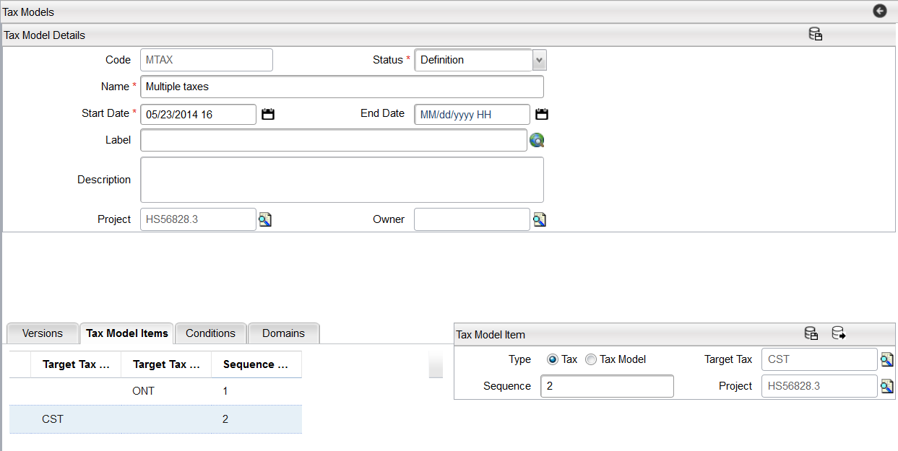

Tax Models
Tax Models allows the user to set up various tax situations within a Catalog. Different countries have different tax models and within a country there are different tax models within provinces/states or cities. For example, in Canada, the provinces of Ontario and Quebec have provincial tax rates, as well as a federal tax. However, Ontario applies the provincial tax on the goods sold, whereas Quebec applies the tax on the cost of goods and services sold, and the federal tax. These two provinces then have two different tax models. Ontario tax can be modeled as a Target Tax and Quebec as a Target Tax Model.
Target Tax
The target Tax allows taxes to be applied to the sold item (goods or services). It allows multiple tax rates to be applied to the cost of goods or services sold within the catalog. For example, a region that has two separate taxes that are both applied to the cost of the items like a GST (federal tax) and a PST (provincial Tax), two Target Tax rates are applied. Below is the detailed setup as shown in the example below:
- Create two Tax Codes:
- GST
- PST
- Create a Tax Model: ONT
- Enter Tax Model Items:
- Enter a Target Tax GST.
- Enter a second Target Tax PST.
Note: The Target Tax Model field remains empty.
Target Tax Model
The Target Tax Model option within the Tax Model Items allows taxes to be applied to on top of taxed items. Setting up Tax Model Items and assigning a Sequence to the items ensures that subsequent tax sequences apply the tax not only on the cost of the Taxable Item, but also on the Taxes defined in the previous sequence. In other words, a Tax of Sequence 2 will apply the tax on the cost of the item and the tax defined on Sequence 1.
For example, in a region where there is a federal and a provincial tax applied to the taxable item and then a city tax (CST) that is applied on top of all the taxes:
- Taxable Item Cost = $100
- GST Rate = 5% or ($100 * 0.05) = $5
- PST = 7% or ($100*0.07) = $7.00
- CST = 10% or [$100 + $7 + $5]*0.1 = $11.20
- Total Taxes = $5 + $7 + $11.20 = $23.20
The following is an example of the setup:
- Create a Tax Code: CST
- Create a Tax Model: MTAX
- Enter Tax Model Items:
- Enter in the Target Tax Model field the previously created ONT (that already has a GST and PST tax) and assign a Sequence = 1 (setting Sequence = 1 means that this tax is applied first).

- Enter the CST Tax Code as the second item in the Tax Model Items and assign a sequence of 2 to this item.

Notes:
- When setting up Tax Model Items, it is only possible to assign an item as a Target Tax or a Target Tax Model - but not both simultaneously.
- Catalog Designer supports having the same sequence for a tax model and a tax model item.
- For a tax or tax model that is not calculated on top of another tax, it needs to be assigned the same sequence number under the same tax model.

- The behaviour is expected to be different if multiple tax models have the same sequence number under the same tax model.